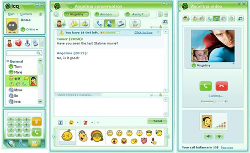
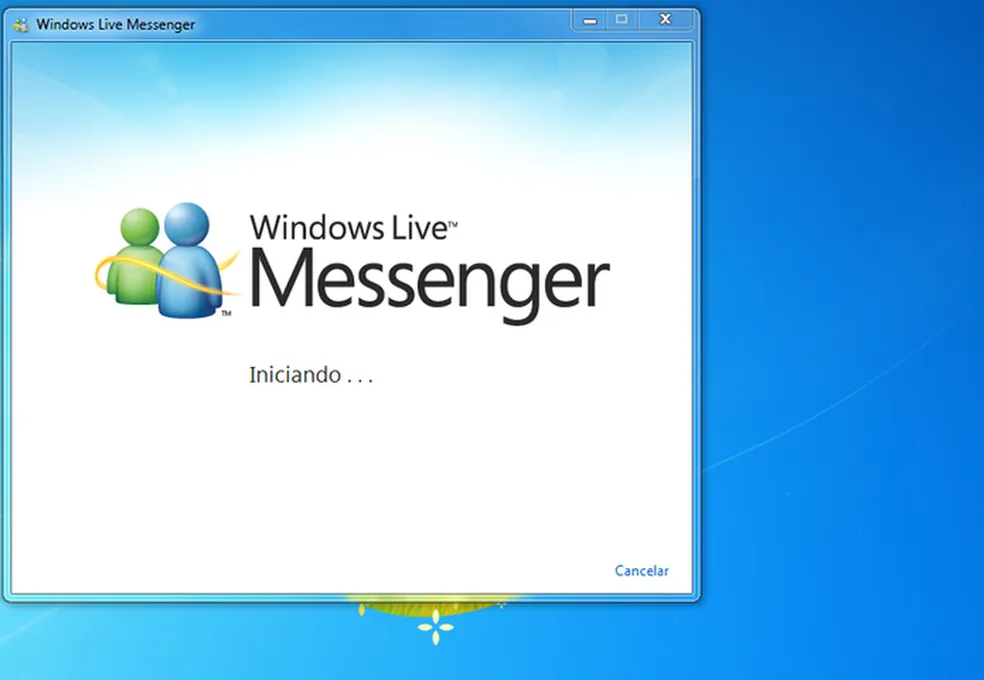
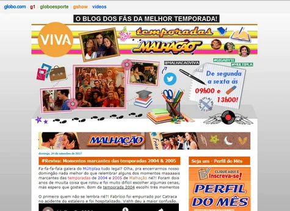
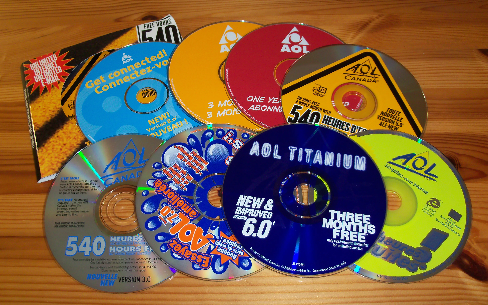
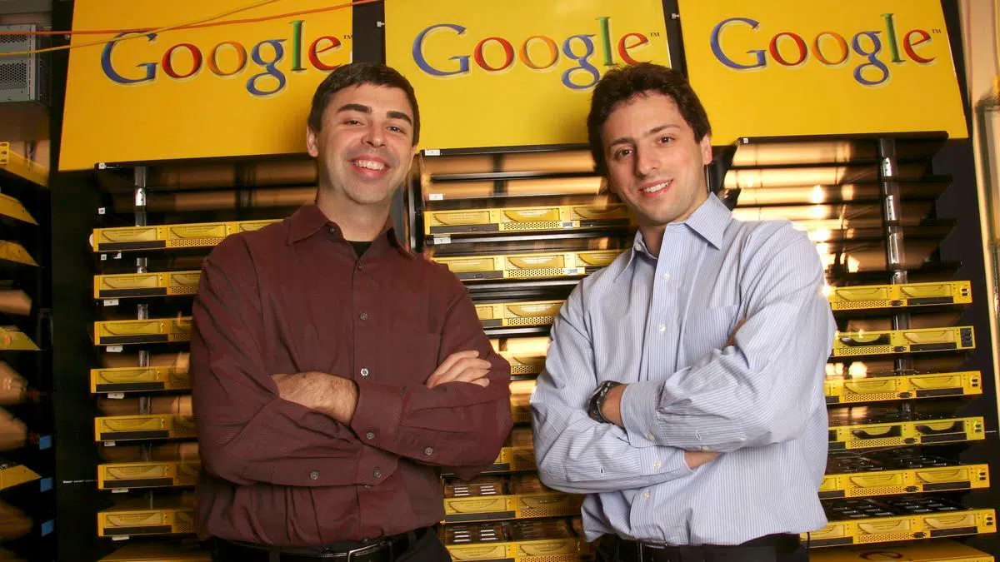
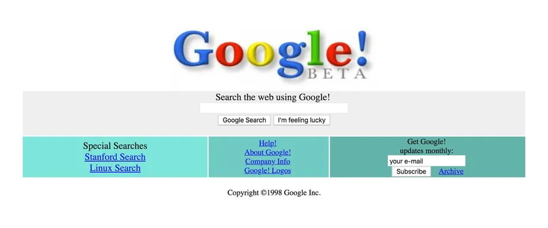

📋 Resumo
Se 1995 inaugurou a internet comercial e colocou o público diante de um novo universo, o final dos anos 90 consolidou esse universo como um espaço de convivência social, entretenimento, trabalho, lazer, aprendizado e cultura. É um período em que a internet deixou de ser vista apenas como tecnologia e começou a ser percebida como ambiente — um lugar onde as pessoas iam para conversar, conhecer outras pessoas, personalizar suas identidades, criar comunidades e participar de um fenômeno cultural global.
📚 Detalhes
O traço mais marcante dessa fase foi o surgimento e a consolidação dos comunicadores instantâneos, começando pelo ICQ, lançado em 1996 pela empresa israelense Mirabilis. O nome “ICQ” era um trocadilho com “I Seek You”, simbolizando precisamente o espírito da época: pessoas buscando outras pessoas, não apenas informações. O ICQ introduziu elementos que definiriam toda a comunicação digital futura — lista de contatos, status online/offline, notificações, mensagens rápidas, perfis pessoais e até emoticons pioneiros. Em poucos anos, o ICQ se tornaria uma febre mundial, ultrapassando 100 milhões de usuários registrados ainda antes dos anos 2000. Ele representava um novo tipo de socialização, algo que parecia mágico para quem até então dependia de telefonemas ou encontros presenciais.

O sucesso do ICQ abriu caminho para a chegada do MSN Messenger, lançado pela Microsoft em 1999. Em pouquíssimo tempo, o MSN se tornaria o principal comunicador instantâneo do planeta, especialmente na América Latina e na Europa. Seu design mais amigável, integração com o Hotmail, sons característicos, “nudges” (os famosos tremer de tela), personalização de fontes, cores e emojis transformaram o ato de conversar online em uma forma de expressão pessoal. No final da década, adolescentes e jovens formavam amizades inteiras no MSN, trocavam arquivos, criavam códigos internos, personalizavam seus apelidos com símbolos, e passavam tardes e noites online. O mundo descobria que a internet não era apenas uma fonte de informação — era um espaço emocional, social e afetivo.

Essa transformação social foi acompanhada de uma explosão de sites pessoais e amadores, impulsionados por plataformas como o GeoCities (fundado em 1995, mas que se tornou gigantesco no final da década), Angelfire e Tripod. Milhões de usuários começaram a criar seus próprios sites, com temas variados: diários pessoais, fã-clubes, páginas sobre bandas, filmes, desenhos, tutoriais, poemas, blogs primitivos e tudo o que a imaginação permitisse. Esses sites, com fundos coloridos, GIFs animados, músicas automáticas e contadores de visitantes, são considerados pelos historiadores da internet como o nascimento da cultura do “usuário-produtor”. Antes mesmo da Web 2.0, as pessoas já estavam aprendendo que a internet era um lugar onde elas podiam construir identidades. Não foi por acaso que, anos depois, redes sociais como MySpace, Orkut e Facebook encontraram terreno fértil: o impulso cultural já estava ali.

Paralelamente, os portais gigantes ganharam força. Yahoo!, AOL e UOL (no Brasil) se tornaram portas de entrada para o mundo online, oferecendo e-mail, notícias, previsão do tempo, chats, serviços financeiros, salas de bate-papo e buscadores rudimentares. Esses portais concentravam milhões de visitantes diariamente, controlando boa parte da economia digital da época. A AOL, por exemplo, chegou a dominar o mercado norte-americano oferecendo pacotes de internet discada integrados com seu próprio ecossistema de serviços, incluindo fóruns, salas de discussão e conteúdo exclusivo. O famoso CD da AOL, distribuído aos milhões, se tornou um ícone cultural do final dos anos 90.

Enquanto isso, mecanismos de busca começaram a se aperfeiçoar. Antes do Google, lançado em 1998, buscadores como AltaVista, Lycos, Excite e infoseek tentavam organizar o caos crescente da Web. AltaVista, especialmente, era considerado extremamente avançado para a época, permitindo buscas rápidas e indexação relativamente profunda. Mas foi o Google, fundado por Larry Page e Sergey Brin, que introduziu o PageRank e revolucionou completamente o conceito de relevância em buscas. Embora ainda fosse um serviço simples, sem anúncios e com uma interface quase minimalista, o Google representava uma nova inteligência na leitura da Web — um prenúncio das dinâmicas informacionais do século XXI.


Culturalmente, o final dos anos 90 também consolidou as salas de bate-papo como fenômeno global. No Brasil, o destaque foi o UOL Chat e o Bate-Papo da Globo.com. Jovens acessavam as salas por idade, cidade, tribo, interesses e estilos. Era uma mistura de anonimato, liberdade e descoberta. As salas de bate-papo representaram a primeira experiência de muitos brasileiros com interação digital em tempo real. Elas introduziram debates políticos, flertes, amizades, brigas, amizades duradouras e novas formas de sociabilidade que existiam apenas naquele ambiente online. A ideia de “comunidade virtual”, estudada posteriormente por sociólogos como Howard Rheingold, já estava plenamente configurada nessa época.
Outra característica importante do final dos anos 90 foi o fortalecimento da cultura hacker e cyberpunk, impulsionada por filmes como Matrix (1999), Hackers (1995) e Johnny Mnemonic (1995). Esses filmes influenciaram toda uma geração que passou a ver computadores como ferramentas de poder e libertação, e a internet como um espaço paralelo, livre e alternativo ao mundo físico. Em revistas, fóruns e listas de discussão, discursos libertários, cooperativos e utópicos circulavam intensamente. A noção de que a internet poderia “democratizar o conhecimento” ou “libertar a informação” era extremamente forte na época.
Era uma utopia digital que viria a influenciar movimentos posteriores, como o software livre, o open source e, mais tarde, as redes sociais. Economicamente, o final dos anos 90 viu a ascensão meteórica das empresas ponto-com. Investidores, fascinados pelo novo ambiente digital, compravam ações de qualquer empresa que tivesse “.com” no nome. Muitas startups surgiram sem modelos de negócio sólidos, mas prometendo uma revolução digital que parecia inevitável. Isso levou à famosa bolha da internet, que explodiria em 2000, mas cujas raízes estavam claramente plantadas nesse período.
Apesar dos excessos, a década de 90 deixou legados importantes: o comércio eletrônico começava a se consolidar, empresas como Amazon e eBay cresciam de forma constante, e novos serviços surgiam semanalmente. Por fim, é fundamental notar que o final da década de 90 foi o período em que a internet deixou de ser apenas tecnologia e se tornou cultura — uma cultura global, expansiva, conectada e em constante movimento. A comunicação instantânea, as salas de bate-papo, os primeiros sites pessoais, a popularização dos provedores, a explosão do número de usuários e o nascimento dos buscadores modernos criaram um novo tipo de humanidade digital.
A Web se tornou um espelho da sociedade e, ao mesmo tempo, um espaço para reinventá-la. O final dos anos 90 é, portanto, o marco que antecede diretamente a Web 2.0 e que transformou a internet em uma força social irreversível. Não era mais possível imaginar o mundo sem estar online. A internet havia deixado de ser promessa — era, definitivamente, realidade.
Hackers
Trailer: https://www.youtube.com/watch?v=vsjK7AVmsL8&utm_source=chatgpt.com
.
The Matrix
Trailer: https://www.youtube.com/watch?v=vKQi3bBA1y8&utm_source=chatgpt.com
.
Johnny Mnemonic
Trailer: https://www.youtube.com/watch?v=Uwl5MBzTCRQ
.🔗 Fontes de Pesquisa